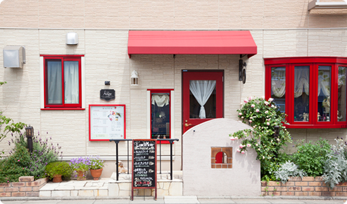

都営新宿線篠崎駅から徒歩１０分 篠崎駅から424m
篠崎駅南口（ロータリー側）に出て進みますと右手に千葉銀行が見えてきます。
千葉銀行の横の細い道をまっすぐ進み、５つ目の交差点
（篠崎区立第４小学校前）を左に曲がりますとCafeAnge入り口となります。
Shop Info
店舗情報
- 営業時間
| オープン | 10：30 |
| ランチタイム | 11：30～14：30（ランチメニューのオーダー頂ける時間です） |
| ティータイム | 14：30～17：00（L.O 16:30） |
| ディナータイム | 18：00～23：00（ラストオーダー・最終入店が22：00となります） |
- 定休日
- 月曜日、第三火曜日
- ※毎週火曜日はティータイムまでの営業となり、ディナータイムはお休みです
- 電話
- 03-6638-7942
- 住所
- 〒133-0061
東京都江戸川区篠崎町7-2-7 イーストエンジェルAoyama １階